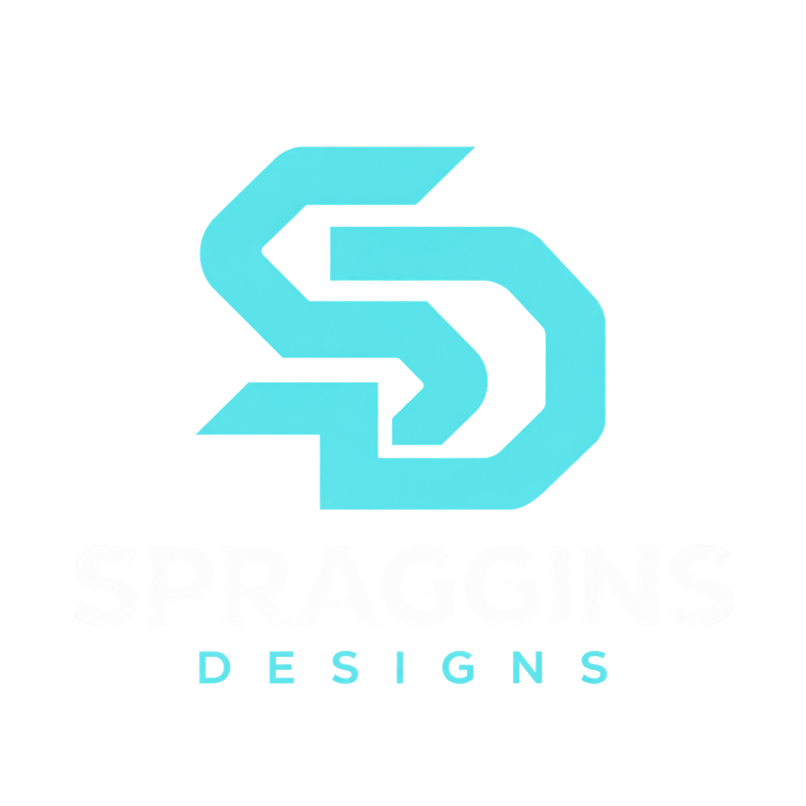
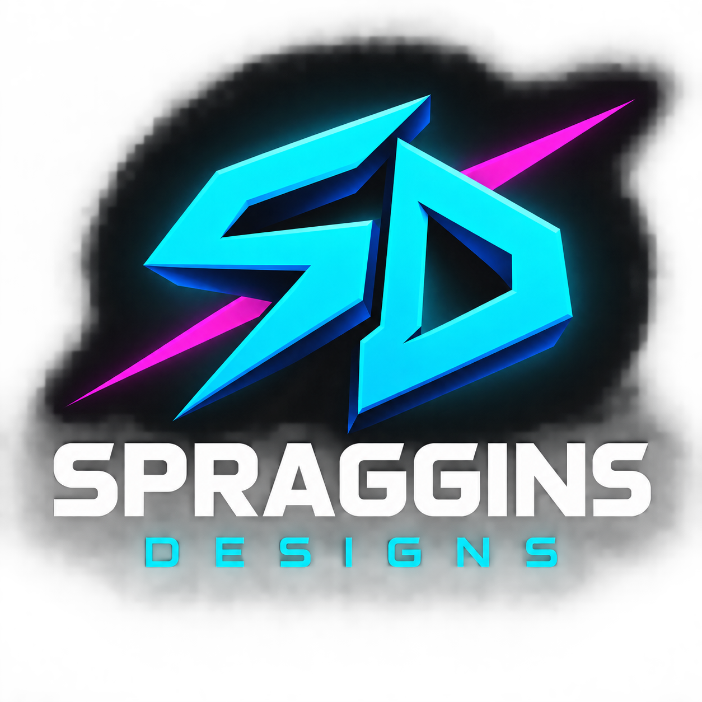
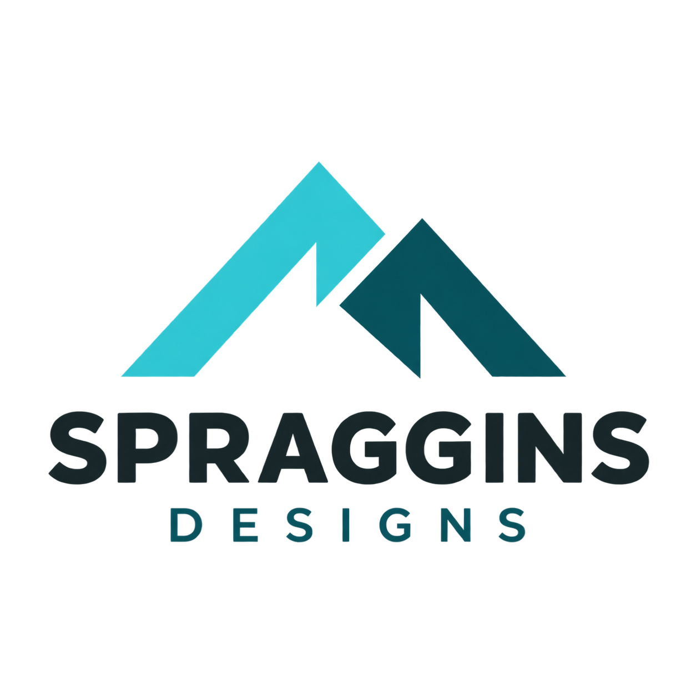

01 · Precision SD
Clean, confident, and closest to your website’s core visual identity.
Download PNGThree original logo directions, informed by your portfolio, local website business, and existing SD artwork.

Clean, confident, and closest to your website’s core visual identity.
Download PNG
Bold creative energy, building on your existing cyan and magenta SD artwork.
Download PNG
Grounded and approachable, inspired by your O’Neals mountain roots.
Download PNG